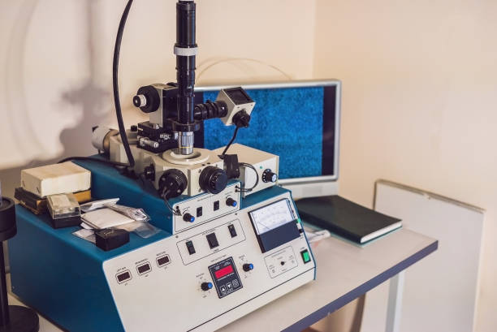

Metallography
Metallography is the cornerstone of material verification and failure analysis, and at Caleb Analytical Solutions, we deliver this service with precision and scientific rigor. Our metallographic capabilities provide critical insight into the microstructure of metals and alloys, supporting industries where integrity and performance are non-negotiable.
We prepare and examine polished cross-sections using both optical microscopy and Scanning Electron Microscopy (SEM). This allows us to detect features such as grain boundaries, phase distribution, inclusions, heat treatment effects, and mechanical deformation. These insights are invaluable in ensuring quality assurance, evaluating welds, identifying root causes of failures, and confirming heat treatment processes.
Our metallography services are tailored for a wide range of clients — from academic researchers and manufacturers to metallurgical engineers and forensic analysts. With our detailed reporting and high-resolution imaging, we help our clients make informed decisions based on concrete structural evidence.
Trust Caleb Analytical Solutions for metallographic studies that reveal the hidden structure of your materials and strengthen your engineering outcomes.